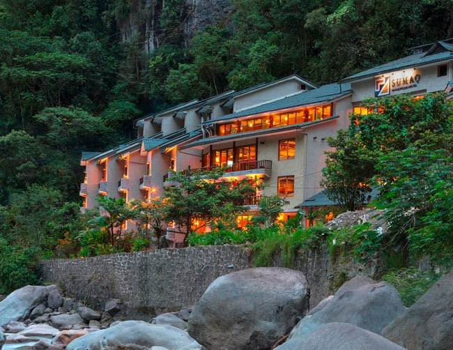

Situado en el corazón de Aguas Calientes, a solo unos minutos del acceso al santuario de Machu Picchu, el Hotel Sumaq ofrece una experiencia de lujo en medio de la naturaleza.
Características Principales:
Habitaciones: Ofrece habitaciones elegantes con vistas panorámicas al río Urubamba y a las montañas circundantes. Las opciones incluyen suites con jacuzzi privado y habitaciones familiares.
Gastronomía: Cuenta con un restaurante gourmet que sirve platos peruanos e internacionales preparados con ingredientes frescos y locales. Además, el hotel ofrece una experiencia culinaria única con el desayuno buffet incluido.
Servicios: Incluye spa de servicio completo, gimnasio, y un salón de yoga. También dispone de servicio de lavandería, Wi-Fi gratuito y transporte al santuario de Machu Picchu.
Experiencias: Los huéspedes pueden disfrutar de actividades como caminatas guiadas por la selva, visitas privadas al santuario y talleres culturales sobre la historia inca.
Sostenibilidad: El hotel está comprometido con prácticas sostenibles, utilizando energía renovable y minimizando su impacto ambiental.

Ubicación:
Situado en el corazón de la exuberante selva andina, el Inkaterra Machu Picchu Pueblo Hotel ofrece un refugio exclusivo a solo unos minutos del icónico sitio arqueológico de Machu Picchu. Accesible a través de un corto viaje en tren desde Cusco, el hotel está enclavado en el vibrante paisaje tropical de Aguas Calientes.
Descripción General:
El Inkaterra Machu Picchu Pueblo Hotel combina la elegancia rústica con un compromiso profundo con la sostenibilidad y el respeto por el entorno natural. Este santuario ecológico está diseñado para ofrecer una experiencia única, fusionando la cultura local con un lujo sin igual.
Alojamientos:
Suites y Habitaciones: Las acogedoras habitaciones y suites están decoradas con materiales naturales, incluyendo madera y piedra local. Cada espacio ofrece vistas panorámicas de los jardines o las montañas circundantes.
Habitaciones Premium: Las opciones de alojamiento premium incluyen comodidades adicionales como jacuzzi privado, chimenea y amplias terrazas.
Servicios y Comodidades:
Restaurante:
El restaurante del hotel, "El Pueblo," ofrece una variada selección de platos peruanos e internacionales preparados con ingredientes frescos y locales. Disfrute de una cena en un ambiente elegante con vistas a los jardines tropicales.
Spa y Bienestar:
El Inkaterra Machu Picchu Pueblo Hotel cuenta con un spa que ofrece tratamientos rejuvenecedores inspirados en prácticas tradicionales andinas. Relájese en el sauna, disfrute de masajes terapéuticos y sumérjase en un ambiente de paz y tranquilidad.
Actividades y Excursiones:
El hotel organiza diversas actividades al aire libre, como caminatas guiadas por la selva, observación de aves y visitas a los jardines de orquídeas. También puede acceder a experiencias culturales que incluyen talleres de cocina y demostraciones de artesanía local.
Wi-Fi y Tecnología:
Disfrute de conexión Wi-Fi gratuita en todo el hotel, así como de acceso a dispositivos de comunicación que facilitan la planificación de su visita a Machu Picchu.
Sostenibilidad:
Comprometido con la conservación del medio ambiente, el Inkaterra Machu Picchu Pueblo Hotel implementa prácticas eco-amigables, incluyendo el uso de energía solar, manejo de residuos y conservación de recursos. El hotel también participa en proyectos locales de preservación y desarrollo comunitario.
El Titilaka Lodge se encuentra en una península privada a orillas del Lago Titicaca, ofreciendo vistas panorámicas incomparables del lago y las montañas circundantes. Su ubicación remota proporciona una experiencia íntima y exclusiva.
Descripción General:
Este lodge de lujo combina diseño contemporáneo con elementos tradicionales andinos. Su arquitectura está inspirada en la cultura local, y las instalaciones están orientadas a ofrecer el máximo confort y una inmersión auténtica en la región.
Alojamientos:
Suites y Habitaciones: Las habitaciones son amplias y elegantes, con grandes ventanales que ofrecen vistas impresionantes del lago. Cada suite está equipada con comodidades de primera clase, incluyendo camas King-size, baños de mármol y áreas de descanso privadas.
Servicios y Comodidades:
Restaurante:
El restaurante del Titilaka Lodge sirve una variedad de platos gourmet inspirados en la cocina peruana e internacional, utilizando ingredientes frescos de la región.
Spa:
Ofrece una gama de tratamientos de bienestar y masajes con vistas al lago.
Actividades
: Los huéspedes pueden disfrutar de excursiones en barco por el lago, visitas a comunidades locales, paseos en bicicleta, caminatas y actividades culturales que incluyen talleres de artesanía.
Sostenibilidad:
Titilaka Lodge se compromete con la sostenibilidad y el respeto por el medio ambiente. Implementa prácticas ecológicas como el uso de energía solar y la conservación de recursos naturales.
El Hotel Libertador Lago Titicaca está ubicado en la isla Esteves, a una corta distancia en barco de la ciudad de Puno. Este hotel ofrece vistas espectaculares del Lago Titicaca y una experiencia cómoda y conveniente.
Descripción General:
Con una mezcla de lujo y elegancia, el Hotel Libertador Lago Titicaca proporciona un ambiente acogedor con un servicio excepcional. La arquitectura del hotel combina elementos modernos con detalles tradicionales andinos.
Alojamientos:
Habitaciones: Las habitaciones del hotel están diseñadas para brindar comodidad y vistas panorámicas al lago. Incluyen lujosas camas, televisores de pantalla plana y baños bien equipados.
Servicios y Comodidades:
Restaurante: El restaurante “Casona del Lago” ofrece una amplia variedad de platos nacionales e internacionales, con un enfoque en la cocina local y productos frescos.
Spa y Bienestar: El hotel cuenta con un spa donde los huéspedes pueden disfrutar de masajes y tratamientos relajantes.
Actividades: Ofrecen excursiones al Lago Titicaca, incluyendo visitas a las islas flotantes de los Uros, la Isla Taquile y la Isla Amantaní, así como paseos en barco y actividades culturales.
Sostenibilidad:
El hotel sigue prácticas sostenibles, incluyendo la gestión eficiente de recursos y el apoyo a las comunidades locales.
Ubicación:
El Hotel Casa Andina Standard Nasca se encuentra en la ciudad de Nazca, a poca distancia de la Plaza de Armas y de las principales atracciones locales. Su ubicación es ideal para aquellos que desean explorar las famosas Líneas de Nazca y otros puntos de interés cercanos.
Descripción General:
Este hotel combina comodidad y una excelente relación calidad-precio. Ofrece un ambiente acogedor y moderno, con un enfoque en la satisfacción del huésped y la conveniencia durante su estancia.
Alojamientos:
Habitaciones: Las habitaciones están diseñadas con un estilo contemporáneo y están equipadas con camas cómodas, aire acondicionado, TV por cable y baño privado. Algunas habitaciones también ofrecen vistas a la ciudad y las montañas circundantes.
Servicios y Comodidades:
Restaurante: El restaurante del hotel ofrece un variado menú de platos locales e internacionales, ideal para recargar energías después de un día de exploración.
Piscina: Disfruta de una refrescante piscina al aire libre, perfecta para relajarte después de un día de aventuras.
Wi-Fi: Conexión Wi-Fi gratuita en todas las áreas del hotel.
Excursiones: El hotel puede ayudarte a organizar excursiones a las Líneas de Nazca, así como a otros sitios de interés en la región.
Ubicación:
Ubicado en el corazón de Nazca, el Hotel Nazca Lines está a una corta distancia en automóvil de las famosas Líneas de Nazca. Su posición céntrica es ideal para explorar tanto las atracciones locales como las excursiones hacia las líneas.
Descripción General:
El Hotel Nazca Lines ofrece una experiencia de alojamiento cómoda y agradable, con un enfoque en la satisfacción de sus huéspedes y la comodidad durante su estancia. Su diseño combina elementos tradicionales con servicios modernos.
Alojamientos:
Habitaciones: Las habitaciones están bien equipadas y decoradas en un estilo sencillo pero acogedor. Incluyen comodidades como aire acondicionado, televisión por cable, y baño privado.
Servicios y Comodidades:
Restaurante: El hotel cuenta con un restaurante que ofrece una variedad de opciones gastronómicas, con énfasis en la cocina local y regional.
Piscina y Áreas Comunes: Disfruta de la piscina al aire libre y las áreas comunes, ideales para relajarte después de un día de exploración.
Wi-Fi: Acceso a internet inalámbrico gratuito en las áreas comunes del hotel.
Excursiones: El personal del hotel puede ayudarte a organizar vuelos sobre las Líneas de Nazca y otras actividades turísticas en la región.